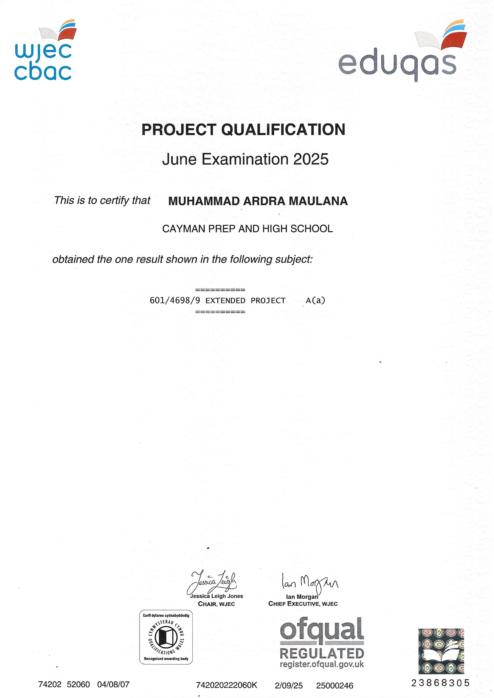
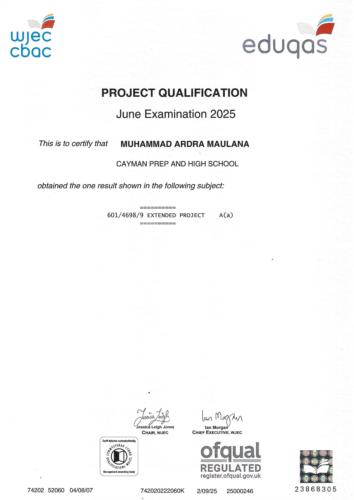

Technical Skills
- Programming Languages: Python
- Web Development: [HTML], [CSS], [JavaScript]
Explanation: Python is an extremely useful language due to its popularity and versatility. While it is a beginner-friendly language, it can still be used for complex tasks such as game development and data analysis. On top of that, Python has a vast collection of modules ready to be imported, which greatly saves a programmer's time and effort.
Context: I showcased file handling skills for my COMP10121 programming project, importing csv, a module to assist with
Evidence: [Provide proof, e.g., project link or certificate]
Explanation: [Explain why this skill is important]
Context: [Describe where and how you applied this skill]
Evidence: [Provide proof, e.g., project link or certificate]
Soft Skills
- [Communication]
Explanation: [Explain why this skill is important]
Context: [Describe where and how you applied this skill]
Evidence: [Provide proof, e.g., feedback or award]
Certifications & Courses
- [AWS Certified Solutions Architect] – [Year]
Explanation: [Explain why this certification is relevant]
Context: [Describe how it supports your career goals]
Evidence: [Attach certificate or link]
Achievements
- A-level Results
- Principal's Honor Roll - 2025
- Mathematics Attainment Award - 2025
- Computer Science Attainment Award - DECEMBER 2024
- Computer Science Attainment Award - MARCH 2024
- Physics Attainment Award - 2024
Explanation: These grades were important for my development, as they showed my adeptness in complex problem-solving and logical-thinking situations. They showed my strong understanding of concepts within my syllabus, including programming and computer theory. Accurately plotting graphs and performing lab practicals in Physics and Chemistry developed my precision and attention to detail. The Extended Project Qualification (EPQ) demonstrated my ability to gather information, evaluate sources, and manage long-term projects independently, showing my competency for academic research.
Context: I studied at Cayman Prep and High School, in the Cayman Islands, and took 5 A-levels: Computer Science, Chemistry, Mathematics, Physics, and EPQ.
Evidence:
 

Explanation: This award reflects that, through discipline, I was able to consistently perform at a high-level across all my subjects.
Context: Awarded to the top 5 students with the highest grades in Year 13 for the academic term.
Evidence:

Explanation: This award outlines my outstanding ability to grasp advanced mathematical concepts, applying them correctly in assessments and approaching problems with precision.
Context: Awarded only to the top‑performing Mathematics student in the year group based on exam results, coursework, and overall attainment.
Evidence:

Explanation: This award highlights my ability to sustain high performance across multiple terms, showing a strong work ethic.
Context: Awarded only to the top‑performing Computer Science student in the year group based on exam results, coursework, and overall attainment.
Evidence:

Explanation: This award demonstrates my strength in both foundational and complex computer science theory, as well as in programming.
Context: Awarded only to the top‑performing Computer Science student in the year group based on exam results, coursework, and overall attainment.
Evidence:

Explanation: This award shows that my attention to detail and analytical skills were recognised at a high level within the school.
Context: Awarded only to the top‑performing Physics student in the year group based on exam results, coursework, and overall attainment.
Evidence: